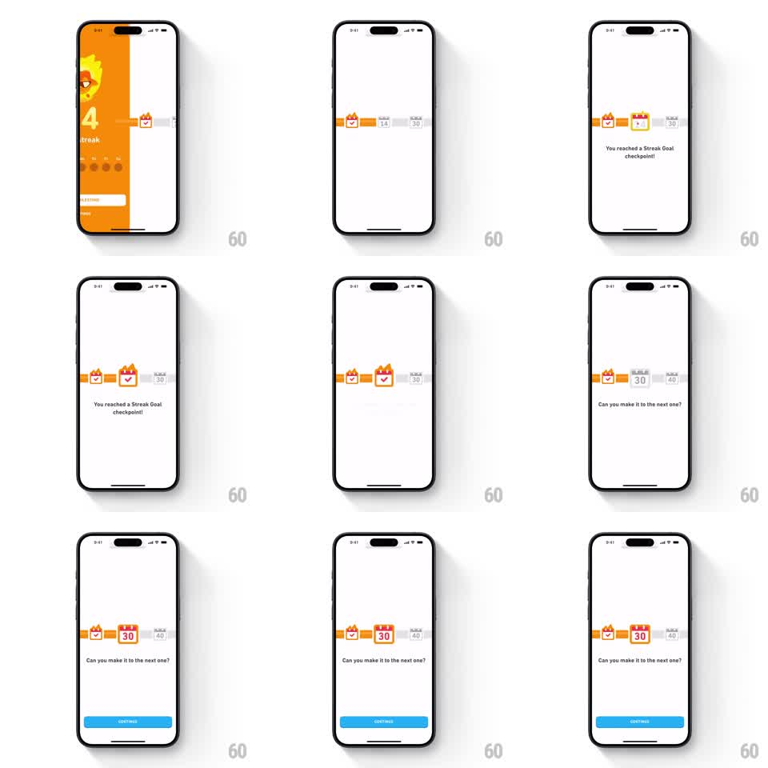

Media
Frame-by-frame

Rebuild this animation 1:1: Duolingo's streak-goal checkpoint - the orange streak page yields to a white horizontal goal timeline whose track fills to the 14-day calendar card, popping it active under "You reached a Streak Goal checkpoint!", then the timeline scrolls right to reveal the 30 and 40 day cards as "Can you make it to the next one?" appears with a springy bounce on the next goal.

Rebuild this animation 1:1: Duolingo's streak-goal checkpoint - the orange streak page yields to a white horizontal goal timeline whose track fills to the 14-day calendar card, popping it active under "You reached a Streak Goal checkpoint!", then the timeline scrolls right to reveal the 30 and 40 day cards as "Can you make it to the next one?" appears with a springy bounce on the next goal.
## Integration
Integration: stack-agnostic spec - springs given as stiffness/damping, timed motions as duration + curve; map every value to your framework and animation library of choice.
## Scene
White screen. A horizontal timeline runs across the upper third: orange track with milestone calendar cards (7, 14 active; 30, 40 upcoming in gray), each card showing its day number and a flame. Below the timeline: centered message text ("You reached a Streak Goal checkpoint!" then "Can you make it to the next one?"). A blue CONTINUE button slides up at the end.
## Motion spec
Pattern: sequential timeline fill with checkpoint pop and scroll reveal.
- The orange streak page slides off left (300ms) revealing the timeline; the track fills from the 7-day card to the 14-day card (500ms, ease-out).
- The 14-day card pops to its active state (scale 0.8 -> 1.1 -> 1.0, spring ~340/16, white card gains orange border and flame) as the fill arrives.
- Message 1 fades up (200ms).
- The timeline then scrolls left (450ms, ease-in-out) bringing the 30-day card to center; it gets a springy bounce (translateY 0 -> -12pt -> 0, spring ~300/18) and brightens from gray to outlined.
- Message swaps to "Can you make it to the next one?" (crossfade 200ms).
- CONTINUE slides up from the bottom (280ms, ease-out).
## Calibration
- Strict sequence: fill -> pop -> message -> scroll -> bounce -> message swap -> button. No overlaps.
- The next goal (30) bounces but stays gray-outlined - it is a teaser, not an achievement.
## Reduced motion
Timeline shows filled state and active card immediately; scroll happens via 200ms crossfade; button fades in.
## Don't miss
- The active card's flame icon ignites during the pop; upcoming cards keep unlit flames.
- The timeline scroll moves the cards, not the message text.